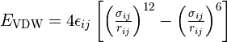
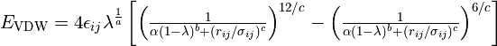
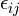
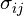
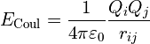
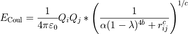
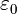

Dealing with severe clashes¶
(NOTE: Most links on this page will only work correctly when the page is loaded in ChimeraX’s help viewer. You will also need to be connected to the Internet. Please close any open models before starting this tutorial.)
There are two general approaches to starting the process of model building in a new dataset:
“Ground-up” - tracing the protein backbone through the density starting either from nothing (typically only possible in cryo-EM maps) or from docked fragments representing the rigid cores of individual domains (the typical approach with molecular replacement in crystallography);
“Top-down” - docking an entire complex or multiple individual chains to give the best rigid-body fit(s), and then working to flexibly re-fit the result into the map.
Given the wealth of high-quality structures (both experimental and predicted) now available, the latter approach has become far more feasible than it once was, and in many cases can be much faster than the ground-up approach. See Top-Down Modelling with AlphaFold-DB Models, Building Into CryoEM Maps With Your Own AlphaFold Multimer Models and Starting From a Molecular Replacement Solution for a Flexible Protein for worked examples of top-down model building in ISOLDE.
One very common problem encountered in top-down building is the introduction of severe clashes (like those pictured below) when independently rigid-body docking multiple chains. This of course is not surprising, since the majority of proteins have at least some internal flexibility - life would be quite boring if they didn’t!
In a traditional classical molecular dynamics forcefield, really severe clashes like these are catastrophic. The main culprit is the Lennard-Jones potential (pictured below). A nice, simple (and computationally cheap) mathematical formula giving a good representation of real-world van der Waals interactions when atoms are not badly clashing, for small distances (below the sum of van der Waals radii of the two atoms) the interaction energy quickly shoots towards infinity, inversely proportional to distance to the 12th power - which means that the applied force is proportional to 1/distance to the 13th power!
To give you an idea of the scale of the problem, if we tried to simply start dynamics with, say, a pair of oxygen atoms placed with a center-to-center spacing of 0.5 Angstroms, then after the first 1 femtosecond time step they would be flying apart at about 160 times the speed of light! A physical impossibility, of course - but remember that classical MD knows only about Newton’s laws, and nothing of relativity.
The above explains why we always run a quick energy minimisation before starting dynamics, carefully moving atoms to find a local minimum stable enough so things won’t explode. But here we often run into a new problem: GPUs, while extremely powerful, are generally only designed to work fast with single-precision (32-bit) values - and the forces generated by bad clashes can easily exceed the range of what can be represented in this format. When that happens, the energy minimiser is left with no gradients to interpret, and gets stuck. Prior to ISOLDE 1.6, that’s what would lead to this dreaded scenario:
The solution to both these problems is to replace the problematic functional form with a so-called “soft-core” potential that removes the problematic infinity at r=0. Starting with version 1.6, ISOLDE uses the soft-core van der Waals implementation described in Pham and Shirts (2011), replacing the standard Lennard-Jones potential:

with the somewhat more complex but significantly more flexible:

... where  and  are parameters defined by the force field for each atom pair i,j. Of the newly added terms (a, b, c, α and λ), only the λ parameter is important for day to day use, controlling the overall “softness” - λ = 1 recapitulates the standard Lennard-Jones potential, while λ = 0 turns off nonbonded interactions entirely (not generally recommended). For the record, the standard values for the other parameters used in ISOLDE are a = 1, b = 2, c = 6, and α = 0.2.
While generally much less of a problem except in the most extreme clashes, charge interaction energies also approach ±infinity proportional to 1/distance. In ISOLDE the standard Coulombic potential:

is replaced with:

... where  is a physical constant known as the permittivity of free space, and b, c, α and λ have the same values as those used in the soft-core van der Waals potential.
(Note: corresponding changes are also made to the implicit solvent force terms. That’s too much to get into here, but suffice to say that this correction fades towards zero - i.e. towards a vacuum environment - with decreasing λ.)
So that’s the underlying theory. Here’s what the resulting potentials look like for a few different values of λ, for a pair of oxygen atoms each with a partial charge of -0.25:
The upshot here is that for values of λ greater than about 0.8, the van der Waals and Coulombic potentials are essentially identical to the unmodified forms within the “normal” regime, only diverging at very high energies. Lower values become increasingly unphysical and are not recommended for day-to-day use - but as we’ll see, temporarily reducing λ can be extremely useful for escaping severe entanglements like the one pictured above.
So, let’s get in to that. The example we’re going to work with is 7w3v (EMDB ID 32294).
We’re not going to work with the actual deposited model, however - that’s already in quite good shape. Rather, we’re going to start from docked AlphaFold models of the two chains. This complex makes a good case study because it highlights one of the weaknesses of AlphaFold: while it’s (usually) very good at predicting short-range conformations, it’s not so great at long-range order - predictions for long thin proteins like the “C” shaped leucine-rich repeat seen here will almost never match the experimental structure over their entire length (sometimes because of natural flexibility, sometimes because AlphaFold simply gets lost).
You might be asking, “why not just use AlphaFold-multimer to predict the complex directly?”. That’s a good question, and in many cases that might be a viable strategy. In this case, however, that’s not possible: this is a complex between a plant immune receptor and a protein from a microbial pathogen. Currently, AlphaFold-multimer and its relatives are only able to make predictions for (some) intra-species complexes, since their implementations are unable to detect coevolution signals between species.
One more answer to the above question is simply, “time”. Multimer prediction is currently somewhat hit-and-miss, and takes on the order of an hour or two per run. When a freely and instantly accessible database of predictions for almost all existing monomeric structures already exists and your map is of good quality, in many cases it will prove much faster to simply start from the individual monomers.
Clicking the following link will load the docked (and trimmed) AlphaFold models and the cryo-EM map and prep them for ISOLDE, and also load the full-length AlphaFold models from the AlphaFold database:
(Remember, if you - like me - prefer the transparent surface map representation over wireframe, you can switch to that style using the “Noncrystallographic Map Settings” widget.)
Go to ISOLDE’s Validate tab and expand the Clashes widget:
Hmm… not what you generally want to see - given that the radius of a carbon atom is about 1.7 Angstroms, a 3.1 Angstrom clash is getting very close to as bad as it can be (3.4 Angstroms, with the atoms exactly on top of each other). No matter - we can still sort this out fairly straightforwardly. But first, let’s have a look at how this happened. Click on the top entry in the table to focus the view on it, then zoom out a bit. Let’s also open the deposited structure to compare:
open 7w3v; color #4/A orange; color #4/C brown
True to form, AlphaFold appears to have gotten the big leucine-rich repeat domain generally correct locally, but has pulled a bit too tight in the long-range curvature - creating a severe overlap with chain A. Prior to ISOLDE 1.6 the approach to a problem like this would have been to fit each chain individually before combining them into one model and painstakingly checking/reducing any remaining clashes before moving forward. Nowadays it’s much easier. Let’s close the deposited model and start experimenting.
First, let’s just confirm what would happen if you tried to start this simulation without softcore potentials. Go to the Nonbonded Potentials widget on ISOLDE’s General tab, and uncheck the “Use softcore nonbonded potentials” box.
(NOTE: if you are using a machine without a high-end Nvidia GPU or generally find simulations running too slow for your liking, try switching the “Simulation Fidelity/Speed” to “Lowest/Fastest” on ISOLDE’s General tab before starting a new simulation.)
Now try to start a simulation. Select the model and click ISOLDE’s play button, or:
The minimiser will spend some time trying and failing to find a way out of the mess, before bringing up the clashes popup menu and (after you click OK) opening the clashes widget. There’s really not much to be done in this state, and we’ll need to start a new simulation to introduce the softcore potentials. Close the clashes widget, and click either ISOLDE’s red stop button or the link below to throw out this simulation.
isolde sim stop discardTo start
Now, check the “Use softcore nonbonded potentials” checkbox and try again.
Well… at least it started this time - but I’m sure you’ll agree that this result isn’t particularly great either. Let’s throw out this simulation and talk strategy.
isolde sim stop discardTo start
There are two key problems we need to overcome here:
The nonbonded potentials are still too strong to let the trapped atoms escape; and
(b) Even if we weaken them further, the interactions in the entangled region are still going to badly mess up the local structure.
Let’s tackle the second problem first. The local starting geometry of each individual chain is generally very good, so let’s go ahead and restrain them using local distance and torsion restraints (see Reference Models). Expand the Reference Models widget on ISOLDE’s Restraints tab, click the “Reference model:” drop-down menu and click “2: AlphaFold Q30BZ2”. This will be automatically identified as corresponding to chain A, and aligned to the working model accordingly. Check both the “Distances” and “Torsions” checkboxes, then click “Apply”.
Now choose “3: AlphaFold A0A2I8B6R1” and apply restraints to chain C in the same way. This time you’ll get a pop-up warning message looking like this:
Since you know this is actually an AlphaFold model, this warning can be safely ignored (click “No”). The essential problem here is that the “pLDDT” values used by AlphaFold to denote confidence are stored in the B-factor column, but aren’t actually B-factors. In fact, they’re inversely related - in general, high pLDDT values should correspond to low B-factors and vice versa. Since ISOLDE’s reference model tools aren’t meant just for AlphaFold models, it uses some simple sanity-check heuristics to decide if a model’s B factors actually “look like” pLDDT values. One of these is based on the idea that on average, alpha helices and beta strands have lower B-factors (and higher pLDDT) than other residues. But there are exceptions to every rule - in this chain, helices and strands make up just 43% of residues according to dssp, and their average pLDDT (86.1) is ever so slightly lower than the average for the remainder (87.4). Such is life - no method is entirely foolproof.
(NOTE: while it’s already been done for you here, you can download the pre-calculated model for almost any protein in the UniProt database with “alphafold fetch {uniprot ID}”.)
That’s all we need those AlphaFold models for, so you can go ahead and close them now:
Zooming in should now reveal a somewhat cobwebby view like this:
Let’s tidy that up a bit by telling ISOLDE to show only strained distance restraints. Collapse the Reference Models widget, and open the Manage/Release Adaptive Restraints widget underneath it. Drag the “Display Threshold” slider a little to the right:
All the distance restraint markup will disappear from the model. They’re not gone, though - any restraint that deviates beyond the display threshold will automatically appear.
Now switch back to the General tab, and take a closer look at the Nonbonded Potentials widget.
You’ll notice there are two λ sliders. The top one controls the softness during energy minimisation (a generally non-interactive step that happens at the start of each simulation; when coordinates are changed in a non-simulation-driven way - e.g. by setting a sidechain to the rotamer preview coordinates; or in the rare situation when ISOLDE detects one or more atoms moving at an excessive velocity). Under most circumstances you shouldn’t need to change the default value of this, but feel free to experiment.
The bottom slider controls the softness during actual interactive dynamics. Drag that one back and forth and watch what it does to the plot underneath (note that the bottom half of the plot is on a linear scale to show the details in the region important to equlibrium behaviour, while the top half is on a log scale). When you’re done, hit the “Reset” button to the right of the slider to return to the default value of 0.95.
Now, let’s start a new simulation and see what happens:
After a few seconds it should start looking something like this:
The extra “reinforcement” provided by the restraints is helping chain C settle correctly towards its density, but atoms in the clash zone are still trapped by their nonbonded interactions. Now, without pausing the simulation, try gradually dragging the λ (equil) slider to the left. As the value approaches about 0.5 you should start to see some new movement, and at around 0.25 you should hit the point where the van der Waals potential barriers drop far enough to be overcome by standard covalent bonds and reference model restraints. If things have gone correctly, the problem region should now look something like this:
When it does, hit the “Reset” button beside the λ (equil) to return to the default potential setting, then go ahead and stop your simulation.
If you have a browse around through the model, you’ll see that the overall fit is now much improved - but there remain numerous local imperfections. Some (perhaps most) look to be attributable to conformational changes induced by binding (assuming that the AlphaFold model for each chain is most representative of the unbound state), but others are probably due to mistakes made by AlphaFold itself - always remember: while it’s usually very good, it’s by no means perfect.
However, fixing model/map discrepancies and errors like these is already covered in some detail in the Top-Down Modelling with AlphaFold-DB Models, Building Into CryoEM Maps With Your Own AlphaFold Multimer Models and Starting From a Molecular Replacement Solution for a Flexible Protein tutorials, so I won’t rehash that here. Suffice to say that with this model and map, you’re now at about the state where those tutorials begin.